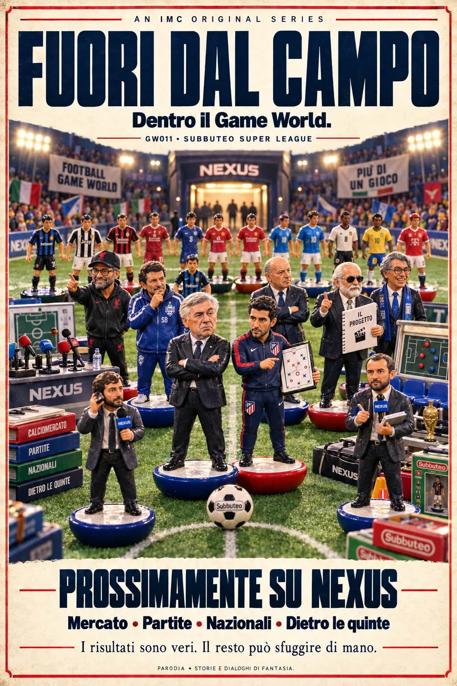

AN IMC ORIGINAL SERIES
FUORI
DAL CAMPO.
Dentro il Game World.
I risultati sono veri.
Il resto può sfuggire di mano.
GW011 · SUBBUTEO SUPER LEAGUE
Entra nella serie ↓
Parodia · Storie e dialoghi di fantasia. Dati sportivi e racconto sono sempre distinti.
IL RACCONTO DEL GW011
Gli episodi
Caricamento episodi…
VENTI CLUB. UN SOLO MONDO.
Scegli la tua squadra
Caricamento club e manager…
I VOLTI DELLA SERIE
La famiglia rojiblanca
Il primo cast: Atlético Madrid. Ogni personaggio mantiene lo stesso volto in tutti gli episodi.
Apri la grafica del cast ↗